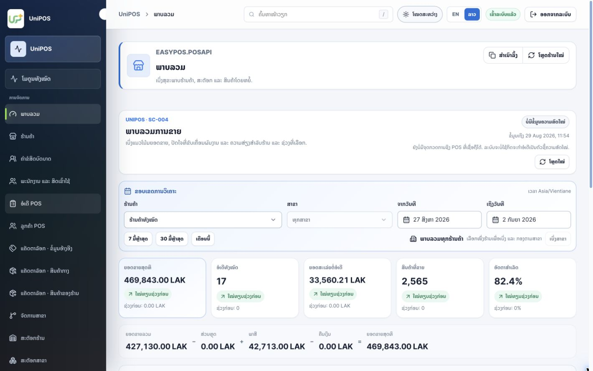
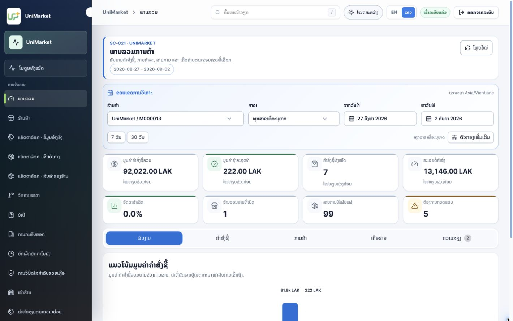
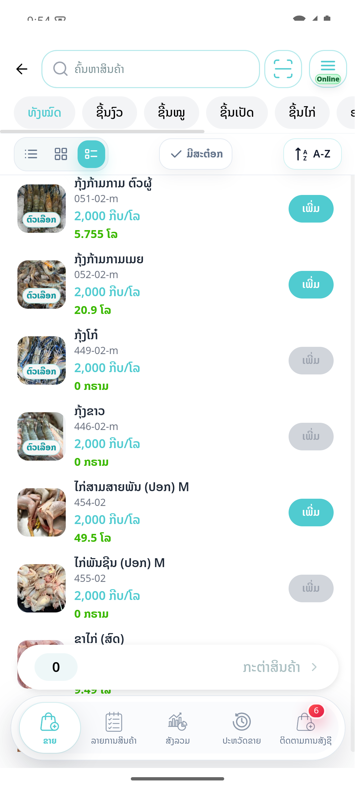
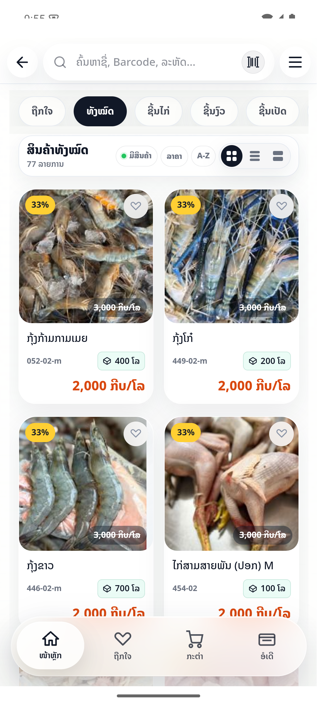
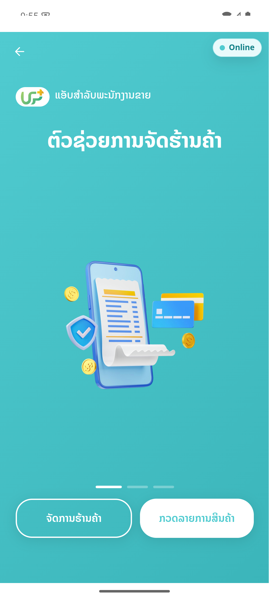

ຂໍ້ມູນຢູ່ຫຼາຍບ່ອນ
ຮ້ານຄ້າ ແລະທີມ Operations ຕ້ອງຕິດຕາມ Order, Stock, Payment ແລະລາຍງານຈາກຫຼາຍຊ່ອງທາງ.
One platform. Every business moment.
UniPay ລວມການຂາຍ, ການສັ່ງຊື້ສິນຄ້າ, Wallet, ການຮັບຊຳລະ ແລະ Backoffice ໄວ້ໃນ Platform ດຽວ ເພື່ອໃຫ້ທີມງານເຮັດວຽກງ່າຍຂຶ້ນ ແລະຜູ້ບໍລິຫານເຫັນຂໍ້ມູນໄດ້ຊັດເຈນ.


Executive summary
UniPay ເຊື່ອມການຂາຍ, ການສັ່ງຊື້, Wallet, ການຮັບຊຳລະ ແລະວຽກຫຼັງບ້ານ ເພື່ອຫຼຸດການປ້ອນຂໍ້ມູນຊ້ຳ ແລະເຮັດໃຫ້ການກວດສອບໄວຂຶ້ນ.
ຮ້ານຄ້າ ແລະທີມ Operations ຕ້ອງຕິດຕາມ Order, Stock, Payment ແລະລາຍງານຈາກຫຼາຍຊ່ອງທາງ.
ລາຍການຈາກ Mobile App ແລະ MiniApp ຖືກສົ່ງຕໍ່ໄປຫາ Workflow ກວດສອບ ແລະລາຍງານໃນ Backoffice.
ເໝາະສຳລັບຮ້ານຄ້າ, ທຸລະກິດຫຼາຍສາຂາ, Distributor, Partner ການຊຳລະ ແລະທີມ Operations.
ຜູ້ຮັບຜິດຊອບເຫັນສະຖານະ, Reference, Timeline ແລະຂໍ້ມູນຕາມ Role ຈາກພື້ນທີ່ດຽວ.
One connected workflow
ລູກຄ້າ ແລະຮ້ານຄ້າໃຊ້ UniPay+ ສຳລັບທຸລະກຳປະຈຳວັນ; ສ່ວນທີມງານໃຊ້ Backoffice ເພື່ອຕັ້ງຄ່າ, ກວດສອບ, ຕິດຕາມ ແລະເບິ່ງລາຍງານ.
Login, KYC, Wallet, QR, UniPOS, UniMarket ແລະ UniSale.
ສິດ, Catalog, Stock, Order, Transaction, ການໄລ່ລຽງ ແລະ System Health.

ເລືອກສາຂາ, ຄົ້ນຫາສິນຄ້າ, ກວດ Stock ແລະເລີ່ມຂາຍ.

ຄົ້ນຫາສິນຄ້າ, ເລືອກໝວດ, ກວດລາຄາ ແລະ Stock ກ່ອນສັ່ງຊື້.

ເຊື່ອມຮ້ານຄ້າກັບພະນັກງານຂາຍ ແລະກວດສິນຄ້າຕາມເຂດຮັບຜິດຊອບ.
Identity, Access, KYC review ແລະ Customer investigation
Wallet Transaction, Ledger, Payment Operations ແລະການໄລ່ລຽງ
ຮ້ານ/ສາຂາ, Catalog, Stock, Order, Shift ແລະລາຍງານ
Assortment, Merchant Stock, Fulfilment, Reconciliation ແລະການໄລ່ລຽງ
Platform modules
ເລືອກໂມດູນທີ່ສົນໃຈ ເພື່ອເບິ່ງຟັງຊັນ, ຂັ້ນຕອນການໃຊ້ງານ ແລະປະໂຫຍດຕໍ່ທຸລະກິດ.
ຂາຍສິນຄ້າ, ຄຸ້ມຄອງ Stock ແລະເບິ່ງກຳໄລໄດ້ຈາກ Smartphone.
ເບິ່ງລາຍລະອຽດ → 02ຈັດການສິນຄ້າ, Order, ຮ້ານຄ້າ ແລະເຄືອຂ່າຍຈັດຈຳໜ່າຍ.
ເບິ່ງລາຍລະອຽດ → 03ຈັດການບັນຊີ, Role, ເນື້ອຫາ ແລະສິດເຂົ້າໃຊ້ລະບົບ.
ເບິ່ງລາຍລະອຽດ → 04ຈັດການ KYC, ຍອດເງິນ, ການໂອນ ແລະປະຫວັດທຸລະກຳ.
ເບິ່ງລາຍລະອຽດ → 05ຕິດຕາມ Transaction, Partner, Webhook ແລະການໄລ່ລຽງ.
ເບິ່ງລາຍລະອຽດ → 06ຕິດຕາມ System Health, Jobs, Realtime events ແລະຂໍ້ມູນສຳລັບແກ້ໄຂບັນຫາ.
ເບິ່ງລາຍລະອຽດ →Built for real operations
ທຸກ Transaction, ການເຄື່ອນໄຫວຂອງ Stock ແລະກິດຈະກຳສຳຄັນ ຖືກສະຫຼຸບໃຫ້ອ່ານງ່າຍ ເພື່ອໃຫ້ທີມງານຕັດສິນໃຈ ແລະລົງມືໄດ້ໄວ.
ຮູ້ທີ່ມາ, ສະຖານະ ແລະເວລາຂອງທຸກລາຍການສຳຄັນ.
ສະແດງສະເພາະໜ້າວຽກ ແລະຂໍ້ມູນທີ່ແຕ່ລະຄົນຮັບຜິດຊອບ.
ເລີ່ມໄດ້ຈາກຮ້ານດຽວ ແລະຂະຫຍາຍເປັນຫຼາຍສາຂາ ຫຼືຫຼາຍ Partner ໂດຍໃຊ້ລະບົບເດີມ.
Pilot success metrics
ຕົວຊີ້ວັດເຫຼົ່ານີ້ເປັນ Target KPI ສຳລັບ Pilot. ຄ່າ Baseline ແລະເປົ້າໝາຍຈະຖືກກຳນົດຮ່ວມກັບລູກຄ້າກ່ອນ Go-live; ບໍ່ແມ່ນຜົນທີ່ອ້າງວ່າບັນລຸແລ້ວ.
ວັດຈາກເລີ່ມເພີ່ມສິນຄ້າຈົນຢືນຢັນການຊຳລະ.
ປຽບທຽບຍອດໃນລະບົບກັບຜົນການນັບ Stock ຈິງ.
ວັດເວລາຈາກເກີດບັນຫາຈົນລະບຸ Transaction ຫຼື Service ທີ່ກ່ຽວຂ້ອງ.
ຕິດຕາມຈຳນວນ ແລະອາຍຸຂອງລາຍການທີ່ຍອດບໍ່ກົງ.
Security & governance
ການສະແດງເມນູໃນ Portal ຊ່ວຍນຳທາງ, ແຕ່ການອະນຸຍາດຂັ້ນສຸດທ້າຍຖືກບັງຄັບໂດຍ Service API.
ກຳນົດສິດຕາມບົດບາດ, Merchant ແລະສາຂາ ພ້ອມການກວດສິດທີ່ API.
ຮອງຮັບຄິວກວດ KYC, ການສະແດງຂໍ້ມູນແບບປົກປິດ ແລະປະຫວັດການດຳເນີນງານ.
ຕິດຕາມ Dependency, Jobs, Webhook, Realtime Events ແລະສັນຍານທີ່ຜູ້ຮັບຜິດຊອບຕ້ອງດຳເນີນການ.
ເນື້ອຫາສາທາລະນະບໍ່ສະແດງ Password, Token, Secret ຫຼືຂໍ້ມູນລູກຄ້າທີ່ລະບຸຕົວຕົນໄດ້.
Connected ecosystem
ເມື່ອຂໍ້ມູນຈາກແຕ່ລະໂມດູນເຊື່ອມກັນ ທຸລະກິດຈະເຫັນພາບລວມໄດ້ຄົບຂຶ້ນ ແລະໃຫ້ບໍລິການລູກຄ້າໄດ້ດີຂຶ້ນ.
Product status & rollout
Roadmap ແຍກສິ່ງທີ່ຢູ່ໃນຂອບເຂດການນຳສະເໜີປັດຈຸບັນ ອອກຈາກໂມດູນທີ່ຈະພັດທະນາໃນໄລຍະຕໍ່ໄປ.
UniPOS, UniMarket, ຈັດການຜູ້ໃຊ້, Wallet, ລະບົບຮັບຊຳລະ ແລະຈັດການລະບົບ.
ເລືອກຮ້ານ/ສາຂາ, ຕັ້ງຄ່າສິດ, ກຽມ Catalog, ຝຶກອົບຮົມ, Go-live ແລະທົບທວນ KPI.
ສະແດງເປັນທິດທາງການພັດທະນາເທົ່ານັ້ນ ແລະບໍ່ລວມເປັນຄວາມສາມາດປັດຈຸບັນ.
Pilot decision
ຂັ້ນຕອນຕໍ່ໄປແມ່ນເລືອກຮ້ານ ຫຼືສາຂາທົດລອງ, ຢືນຢັນ Workflow, ກຳນົດ Baseline ແລະນັດໝາຍ Demo ຕາມ Script.